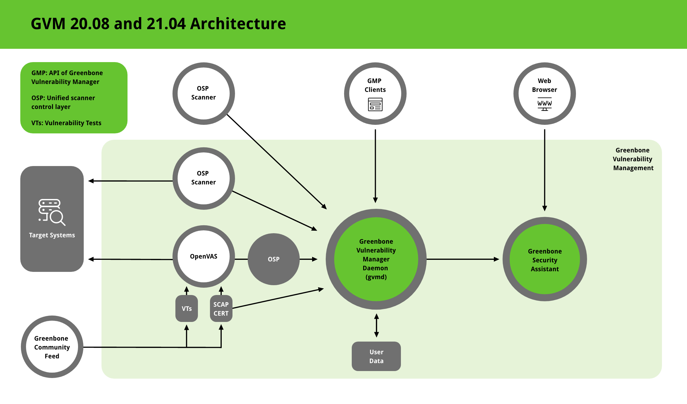

Background¶
GVM Architecture¶
The Greenbone Vulnerability Management (GVM) is a framework of several services. It is developed as part of the commercial product line Greenbone Professional Edition.
GVM was originally built as a community project named OpenVAS and is primarily developed and forwarded by Greenbone Networks.
The following figure shows an overview of the architecture for GVM 21.04.

Architecture of GVM 21.04¶
GVM is grouped into three major parts:
Executable scan application that runs vulnerability tests (VT) against target systems
Greenbone Vulnerability Manager Daemon (gvmd)
Greenbone Security Assistant (GSA) with the Greenbone Security Assistant Daemon (gsad)
The GVM framework is released under Open Source licenses as the Greenbone Source Edition (GSE). By using it, Linux distributions can create and provide GVM in the form of installation packages.
Greenbone Vulnerability Manager Daemon (gvmd)¶
The Greenbone Vulnerability Manager (gvmd) is the central service that consolidates plain vulnerability scanning into a full vulnerability management solution. gvmd controls the OpenVAS Scanner via Open Scanner Protocol (OSP).
The service itself offers the XML-based, stateless Greenbone Management Protocol (GMP). gvmd also controls an SQL database (PostgreSQL) where all configuration and scan result data is centrally stored. Furthermore, gvmd also handles user management including permissions control with groups and roles. And finally, the service has an internal runtime system for scheduled tasks and other events.
Greenbone Security Assistant (GSA)¶
The Greenbone Security Assistant (GSA) is the web interface of GVM that a user controls scans and accesses vulnerability information with. It the main contact point for a user with GVM. It connects to gvmd via the web server Greenbone Security Assistant Daemon (gsad) to provide a full-featured web application for vulnerability management. The communication occurs using the Greenbone Management Protocol (GMP) with which the user can also communicate directly by using different tools.
OpenVAS Scanner¶
The main scanner OpenVAS Scanner is a full-featured scan engine that executes vulnerability tests (VTs) against target systems. For this, it uses the daily updated and comprehensive feeds: the full-featured, extensive, commercial Greenbone Security Feed (GSF) or the free available Greenbone Community Feed (GCF).
The scanner consists of the components ospd-openvas and openvas-scanner. The OpenVAS Scanner is controlled via OSP. The OSP Daemon for the OpenVAS Scanner (ospd-openvas) communicates with gvmd via OSP: VT data is collected, scans are started and stopped, and scan results are transferred to gvmd via ospd.
Additional Software¶
OSP Scanner¶
Users can develop and connect their own OSP scanners using the generic ospd scanner framework. An (generic) OSP scanner example which can be used as an OSP scanner template can be found here.
GMP Clients¶
The Greenbone Vulnerability Management Tools (gvm-tools) are a collection of tools that help with remote controlling a Greenbone Security Manager (GSM) appliance and its underlying Greenbone Vulnerability Manager Daemon (gvmd). The tools aid in accessing the communication protocols GMP (Greenbone Management Protocol) and OSP (Open Scanner Protocol).
This module is comprised of interactive and non-interactive clients. The programming language Python is supported directly for interactive scripting. But it is also possible to issue remote GMP/OSP commands without programming in Python.
Greenbone, GVM, OpenVAS and How They Are Connected¶
When the OpenVAS project was launched, it only consisted of an engine for scanning vulnerabilities.
Shortly after that, Greenbone Networks was founded to achieve professional support for vulnerability scanning. Greenbone started to lead the development of OpenVAS, added several software components and turned OpenVAS into a vulnerability management solution while keeping the values of free software.
After several years, it became obvious that using OpenVAS as the brand name for the open source project and funding of almost the entire development of the project was not recognized from the outside. Therefore, after the release of the OpenVAS 9 framework, it got renamed to Greenbone Vulnerability Management (GVM) and released as Greenbone Source Edition (GSE). Since GVM 10, the term OpenVAS is only used for the scanner component as it was at the beginning of the project.
History of the OpenVAS project¶
In 2005, the developers of the vulnerability scanner Nessus decided to discontinue the work under Open Source licenses and switch to a proprietary business model.
At this point, developers from Intevation and DN-Systems – the two companies which would later found Greenbone Networks – were already contributing developments to Nessus, focusing on client tools. The works were primarily supported by the German Federal Office for Information Security (BSI).
In 2006, several forks of Nessus were created in response to the discontinuation of the Open Source solution. Of these forks, only one has continued to show activity: OpenVAS, the Open Vulnerability Assessment System. OpenVAS was registered as a project at Software in the Public Interest, Inc. to hold and protect the domain “openvas.org”.
The years 2006 and 2007 brought little activity other than cleanups of the status quo. But in late 2008, the company Greenbone Networks GmbH, based in Osnabrück, Germany was founded to drive OpenVAS forward. Essentially, Greenbone’s business plan was about 3 cornerstones:
Go beyond plain vulnerability scanning towards a comprehensive vulnerability management solution.
Create a turn-key appliance product for enterprise customers.
Continue the Open Source concept of creating a transparent security technology.
Also in 2008, two further companies became active: Secpod from India and Security Space from Canada. Both of them had a focus on contributing vulnerability tests, and teamed up with Greenbone Networks to start producing a reliable and up-to-date feed of vulnerability tests. This started with removing any source code and vulnerability tests where the license was not clear or not compatible. Several thousands of vulnerability tests were eliminated to get a clean starting point. Shortly after, the feed content grew quickly and steadily.
In 2009, Greenbone added the first additional modules to build a vulnerability management solution. The web interface and the central management service were developed from scratch, with generic protocols defined as their API. At the same time, the OpenVAS scanner was carefully improved and quickly lost compatibility with its ancestor. All Open Source work was branded “OpenVAS”. The first “Greenbone Security Manager” appliance products entered the market in spring 2010.
In the years 2010 to 2016, the commercial product was systematically improved and extended, and so were the Open Source modules. The vulnerability management was extended to include daily updated security advisories, which were made available to the public with a GPL-compatible license by the German CERTs DFN-CERT and CERT-Bund, a division of the BSI.
In March 2017, the OpenVAS framework reached version 9. Many new modules and numerous features were added during the release cycles. Several hundreds of thousands of lines of code were produced and there was almost no day without a couple of released code improvements by a growing development team.
The year 2017 marked the beginning of a new era: first of all, Greenbone Networks became visible as the driving force behind OpenVAS, reducing the brand confusion. This included several activities, the most essential one being the renaming of the “OpenVAS framework” to Greenbone Vulnerability Management” (GVM), of which the OpenVAS Scanner is one of many modules. It also led to “GVM-10” as the successor of “OpenVAS-9”. There were no license changes, all modules remained Open Source.
The second major change in 2017 involved the feed service. Apart from the branding confusion, several companies integrated the technology and feed, passing it off as their work or claiming to be an alternative to Greenbone’s product at a better price. Only a minority of them properly complied with the GPL licenses. None of them cooperates with Greenbone Networks commercially. To achieve better visibility, less misunderstanding, and better differentiation from other OpenVAS-based products, the public feed was renamed to Greenbone Community Feed and the feed development was internalized. Furthermore, the release scheme has been changed from a 14-day delay to a daily publication without delay, now excluding vulnerability tests for enterprise products.
The third major change to the new era was the transition to a modern infrastructure, namely GitHub and a community forum. The whole transition was completed in 2018 and boosted both productivity and community activity.
In 2019, the branding separation was completed. OpenVAS now represents the actual vulnerability scanner, as it did originally, and the “S” in “OpenVAS” now stands for “Scanner” rather than “System”. These changes were accompanied by an updated OpenVAS logo. The framework in which OpenVAS is embedded is the Greenbone Vulnerability Management (GVM).
OpenVAS released with GVM-10 received numerous performance optimization to meet the challenge of a growing number of vulnerability tests scanning target networks of increasing size and heterogeneity.
OpenVAS released with GVM-11 introduced substantial architectural changes: the former service openvassd was turned into a command-line tool openvas. It is controlled by the service layer ospd-openvas. This concept essentially replaces the old stateful, permanent and proprietary OTP (OpenVAS Transfer Protocol) by the new stateless, request-response XML-based and generic OSP (Open Scanner Protocol).